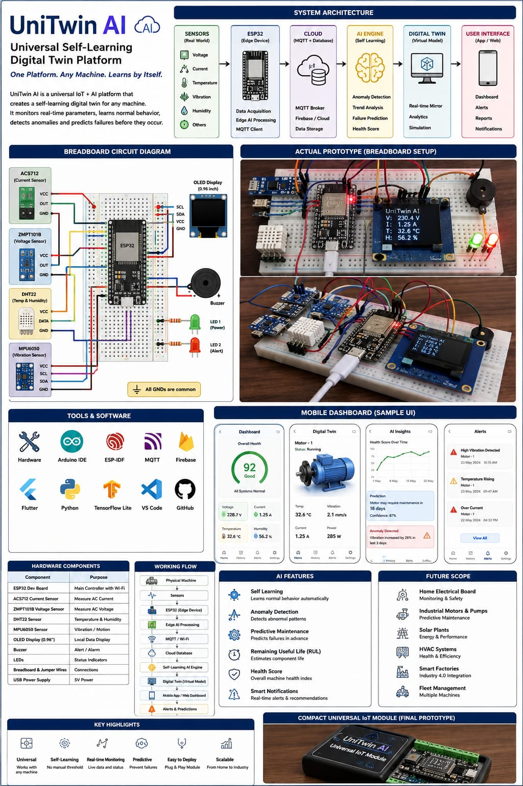

01 — THE PROBLEM
Machines Generate Data.
But Data Alone Isn't Intelligence.
Traditional monitoring systems primarily provide raw sensor readings. They often lack the capability to:
02 — THE SOLUTION
Meet UniTwin AI
UniTwin AI converts a physical machine into an intelligent digital representation using IoT sensing, edge computing, cloud infrastructure, AI/ML analytics, and Digital Twin technology.
03 — SYSTEM ARCHITECTURE
End-to-End Signal Path
Hover or tap any block to trace how data moves through UniTwin AI, from the physical asset to the intelligence layer.
04 — SENSOR LAYER
Reading The Machine's Vital Signs
05 — EDGE INTELLIGENCE
ESP32 Edge Device
- Data acquisition
- Signal processing
- Local filtering
- Feature extraction
- Data packaging
- Edge-level decision making
- Wi-Fi communication
- MQTT communication
06 — COMMUNICATION & CLOUD
MQTT Link to Cloud Platform
MQTT provides lightweight communication between the edge device and cloud platform.
07 — THE INTELLIGENCE LAYER
AI Engine
Anomaly Detection
Detects abnormal operating patterns.
Trend Analysis
Identifies changes in machine behavior over time.
Failure Prediction
Predicts potential equipment failures.
Health Score
Generates an overall machine health indicator.
Remaining Useful Life
Estimates remaining operational life.
08 — DIGITAL TWIN
Your Machine. Digitally Alive.
SIMULATED PROTOTYPE DATAINTERACTIVE MACHINE SIMULATION
09 — LIVE INDUSTRIAL DASHBOARD
UniTwin Control Center
SIMULATED LIVE DATATemperature Trend
Current Trend
Vibration Trend
Machine Health
ALERT CONSOLE
10 — FROM MONITORING TO PREDICTION
Beyond Reactive Monitoring
Traditional Monitoring
UniTwin AI
Early detection can support proactive maintenance planning. This does not represent a guaranteed failure prediction.
11 — HARDWARE PROTOTYPE
From Digital Concept to Physical Prototype
PROTOTYPE
| Component | Purpose |
|---|---|
| ESP32 Dev Board | Main controller with Wi-Fi |
| ACS712 Current Sensor | Measure AC current |
| ZMPT101B Voltage Sensor | Measure AC voltage |
| DHT22 Sensor | Temperature & humidity |
| MPU6050 Sensor | Vibration / motion |
| OLED Display (0.96") | Local data display |
| Buzzer | Alert / alarm |
| LEDs | Status indicators |
| Breadboard & Jumper Wires | Connections |
| USB Power Supply | 5V power |
Connection Map
12 — SOFTWARE & TECHNOLOGY STACK
Technology Ecosystem
Hardware
ESP32 · Sensors · OLED · LEDs · Buzzer
Development
Arduino IDE · ESP-IDF · VS Code
Communication
Wi-Fi · MQTT
Cloud
Firebase / Cloud Database
AI
Machine Learning · Anomaly Detection · Predictive Analytics
Application
Flutter · Web Dashboard · Mobile Dashboard
13 — ONE PLATFORM. MANY MACHINES.
Real-World Applications
These represent potential application scenarios, not necessarily currently implemented hardware.
Industrial Motors
Predictive maintenance and condition monitoring.
Pumps
Detect abnormal vibration and operating conditions.
HVAC Systems
Monitor temperature, current, and efficiency.
Solar Plants
Monitor electrical and environmental parameters.
Smart Factories
Support Industry 4.0 monitoring.
Fleet Management
Monitor machine and vehicle health.
14 — KEY ADVANTAGES
Built To Scale
Universal
Designed to work with different machine types.
Self-Learning
Can learn machine operating behavior through data.
Real-Time
Continuously monitors machine parameters.
Predictive
Moves beyond simple monitoring toward failure prediction.
Scalable
Designed for expansion from a prototype to multiple assets.
Easy To Deploy
Modular hardware and software architecture.
15 — FUTURE SCOPE
Roadmap
FUTURE SCOPE16 — FROM DATA TO DECISIONS
Impact
Sense
Collect machine data.
Understand
AI analyzes machine behavior.
Predict
Identify potential problems before failure.
UniTwin AI aims to transform conventional condition monitoring into intelligent, predictive asset management.